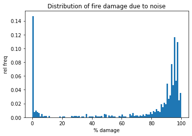
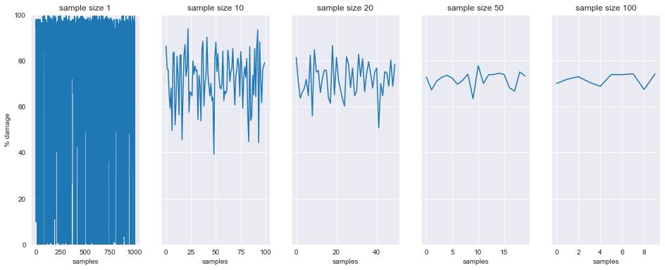
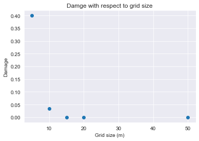
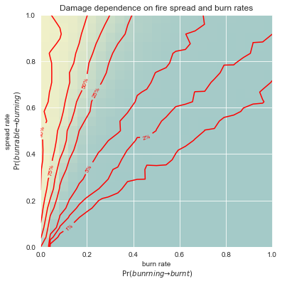
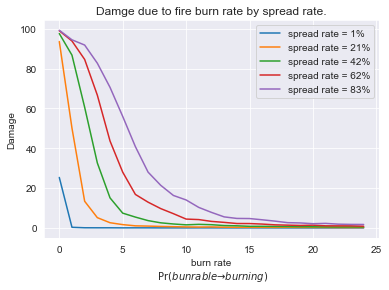
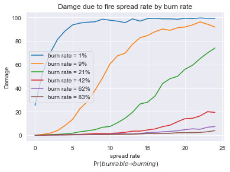
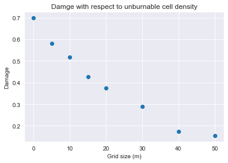

Our simulation depends on multiple parameters --- the size of the grid, the initial distribution of cell types, the fire spread and burn rates (probabilities). We need to run simulations for reasonable values of the different parameters to understand their importance/impact. Additionally, some of dependencies on parameters are stochastic so we may also need to rerun under same parameter values to estimate the effect of noise and if needed to average results over multiple runs.
Below is the order I would carry out this process and the general principles that I would follow. I have covered this in more detail in labs.
First, to show you noise (randomness) is an issue, run simulation with the following parameters
\[ \begin{array}{l|ccccc} {\small\bf Parameter} & m & n & \text{fires} & \Pr(\text{burnable}\to\text{burning}) & \Pr(\text{burning}\to\text{burnt})\\\hline {\small\bf Value} & 10 & 20 & 1 & 1.0 & 0.2 \end{array} \]
Running with \(\text{seed}=2\) we get
1 2 3 4 5 6 | |
Running with \(\text{seed}=29\) we get
1 2 3 4 5 6 | |
So
Running above simulation a number of times and generate the following histogram

So what is this saying? There two most likely outcomes --- either the fire burns out before it gets started, or manages to get going and consumes most of the forest.
So how many simulations run do we need to average over? the more we use the better but the more we use the more computational effort is needed. The following graph shows the effect of sample size on the average damage.

Looking at the above a sample size of 50 seems to be good enough, but if simulation time is slow we might drop back to 20 or even 10.

From this we can conclude that a grid size of 15--20 seems to work well, so the default of \(10\times 20\) is probably big enough for our purposes.
For any given initial setup, the fire evolution depends on two rates/probabilities --- how easily the fire can spread to neighbouring burnable cells: \[ \text{spread rate} = \Pr(\text{bunrable} \to \text{burning}) \] and how long it takes for to burn all consumables in a burning cell: \[ \text{burn rate} = \Pr(\text{buning} \to \text{burnt}) \]
Note: we probably should have called this burnout rate, but so be it.
There are some extreme cases that we can predict, such as
But what for what values do these extreme cases occur? and what happens for intermediate parameter values?

Looking at both rate parameters individually, for various levels of the other rate parameter we have


From above diagrams we see
\[ \text{burn rate} < \frac{\text{spread rate}}{10} \]
So what does this mean in practical terms? Well we can't modify the spread rate but we can affect the burn rate. See Prescribed burning in the southern United States for a management strategy based on limiting the amount of biomas/fuel (i.e. raising the burn rate). In a realistic situtation one would need some way to map the (observable) level of biomas to a burn rate (this is a curve fitting exercise).

For very low densities (<20%) the relationship appears to be linear, but it becomes asymptotic to the horizontal axis for larger densities.
Finally, you are going to apply your model to a real forest. The following figure is a satellite image of a forest (source Quartieri:2014). This is quite different from the artificial forest we built above in the distribution of unburnable and burnable cells. For this setup, we are interested in given this forest, what is the impact of the fire spread and burn rates for a fire starting in the centre of the forest (i.e the centre of the image).
You are going to estimate the probability of a fire consuming the

This is a \(195\times 304\) image in RGBA format (each channel in range 0...1). The following code reads in the image, output its dimensions, and displays the image as above.
1 2 3 | |
Getting the forest (burnable) regions is relatively easy --- I just took the green channel
1 | |
and picked a threshold value of 0.4. You could try other values if you wish. (I had hoped to estimate slope/height from how bright the forest regions are but that is too difficult.) Make sure you convert result from boolean to int otherwise you might have problems later.

I also used the resize function from
1 | |
to reduce the size of the image when testing. Since the dimension are nearly in ratio 2:3, I rescaled to 100x150 and 50x75. As discussed in labs I modified model_setup so that it accepts extra parameter image=None and
Starting 10 random fires and fire spread and burn rate of \[ \Pr(\text{bunrable} \to \text{burning}) = 1.0 \qquad \Pr(\text{buning} \to \text{burnt}) = 0.3 \] we have


with summary
1 2 3 4 5 6 7 8 9 10 11 | |
ZIP archive with python scripts (and notebooks) that generate your version of all of the diagrams shown here.